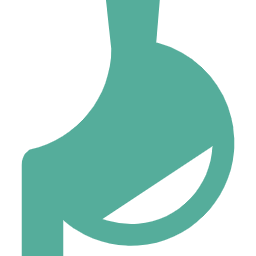

診療案内
こんな症状があるときはご相談ください
胃の痛み、もたれ、むかつき
おなかの張りや不快感
便秘・下痢・血便
食欲不振、体重減少
胃や腸の検査結果のフォロー
健診で異常を指摘された方
主な対応疾患

胃炎・胃潰瘍・逆流性食道炎
過敏性腸症候群（IBS）
大腸炎（感染性・潰瘍性など）
便秘症・下痢症

肝機能障害・脂肪肝
胆のう・すい臓の異常
各種検査
症状に応じて、**血液検査、腹部超音波（エコー）、胃カメラ（内視鏡）**などの検査を行います。
検査の必要性や内容については、十分にご説明したうえでご案内いたしますので、安心してご来院ください。
00-0000-0000
| 診療時間 | 月 | 火 | 水 | 木 | 金 | 土 | 日 |
|---|---|---|---|---|---|---|---|
| 10:00-12:00 | ● | ● | ● | ● | ● | ● | ● |
| 15:00-19:00 | ● | ● | ● | ● | ● | ● | ● |